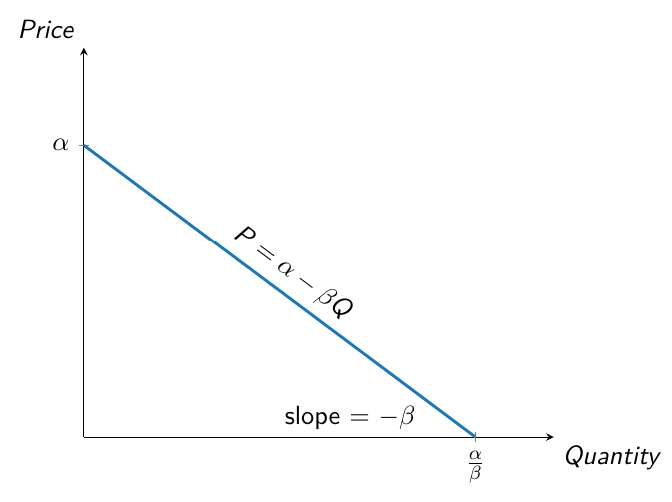

University of Bozen-Bolzano
May 2025
Mark Whitacre (Archer Daniels Midland Co.):
«I think [raising the price to] 3.55 is a little heavy right now…»
Kanji Mimoto (Ajinomoto Co.):
«From now.»
Mark Whitacre (Archer Daniels Midland Co.):
«In my opinion.»
Kanji Mimoto (Ajinomoto Co.):
«From now.»
Mark Whitacre (Archer Daniels Midland Co.):
«Right. From tomorrow, from tomorrow.»
The efficacy of a market is generally thought to be rooted in competition.
Collusion, whereby firms agree not to compete with one another and charge high prices, undermines this process most fundamentally.
Collusion is generally condemned by economists and policy-makers and is unlawful in almost all countries.
On July 19, 1999, a US District Court in Illinois sentenced three managers from Archer Daniels Midland, a multinational company in the food industry, to over two years in prison for violating the Sherman Antitrust Act.
The three managers had been involved in a corporate agreement to voluntarily inflate the price of lysine, one of the most widely used additives in animal feed.
Shortly before, Archer Daniels Midland had agreed to settle by paying a $100 million fine, which at the time was the largest ever imposed for an antitrust violation.
In total, the case involved nine companies from seven different countries, with settlements amounting to over $225 million.
The evidence presented in the Archer Daniels Midland case mostly consisted of audio and video recordings made by the FBI in 1994 at a hotel in Maui, Hawaii.
Under the pretext of a meeting of the European Feed Additives Association, representatives of the companies involved in the price-fixing scheme had agreed to significantly increase the profit margin on the production cost of lysine.
Proving that a price increase is not due to external factors, such as higher production costs, is difficult.
Conversey, written note or an audio/video recording capturing the existence of a cartel is almost impossible to dispute.
This is why antitrust authorities have long used documentary evidence to show that rising prices in a particular sector are the result of collusive agreements.
Until AIs started setting prices, that is.
Pricing algorithms can ‘learn’ not to compete and to coordinate on high prices, even without explicit agreements and without being instructed to do so.
This harms consumers just like traditional, explicit price-fixing based on agreements among managers.
The increasing delegation of price-setting to algorithms has the potential for opening a back door through which firms might collude lawfully.
Algorithms learn to adopt collusive pricing rules without human intervention, oversight, or even knowledge.
Review of some core concepts in microeconomics.
Introduction to the economic theory of collusion.
Some evidence on algorithmic collusion.
Consequences of algorithmic collusion for entitrust law.
Demand function
Describes the relationship between how much consumers are willing to pay for a good and the quantity of the good consumed.
We will generally work with linear demand functions: \[ p = \alpha - \beta Q \qquad \alpha, \beta > 0 \]
where \(p\) and \(Q\) denote price and quantity, respectively.

If the price is above \(\alpha\), no consumer wants to buy the good. As the price falls below \(\alpha\), demand for the good increases.
The slope of the curve is \(-\beta\): any unit increase in quantity demanded corresponds to a decrease in price equal to \(\beta\).
Each point on the demand curve represents the highest price consumers are willing to pay for a given quantity of the good.
Profit
A firm’s revenue minus its total costs.
Formally, a firm’s profit is given by: \[ \pi(Q) = \underbrace{R(Q)}_{\substack{\text{Total} \\[1pt] \text{revenue}}} - \underbrace{~C(Q)}_{\substack{\text{Total} \\[1pt] \text{cost}}} \]
Revenue is: \(R(Q) = \text{market price} \times \text{quantity sold}\)
Marginal revenue
The increase in total revenues when output is increased by one unit.
Marginal cost
The increase in total cost when output is increased by one unit.
Consider two firms, 1 and 2, that produce the same good and compete in the same market.
The two firms simultaneously choose what price to set.
They use the same technology, that is they have the same cost function: \[ C (q_i) = c q_i \qquad i = 1,2 \]
Firms’ marginal cost is constant: \(MC(q_i) = \frac{\partial C(q_i)}{\partial q_i} = c\).
The industry demand curve is \(p = \alpha - \beta Q\), where \(Q = q_1 + q_2\).
However, since firms compete in prices, it is convenient rewrite the demand function as: \[ Q = a - b p \]
where \(a \equiv \alpha/\beta\) and \(b \equiv 1/\beta\).
Consumers buy from the firm charging the lowest price.
Take Firm 2’s perspective.
To choose its price, Firm 2 must first work out the demand for its product conditional on both its own price, \(p_2\), and Firm 1’s price, \(p_1\).
Firm 2’s demand is therefore: \[ q_2 \left( p_1, p_2 \right) = \begin{cases} 0 &\text{if} \quad p_2 > p_1 \\ \frac{a - bp_2}{2} &\text{if} \quad p_2 = p_1 \\ a - bp_2 &\text{if} \quad p_2 < p_1 \\ \end{cases} \]
If \(p_2 > p_1\), then Firm 2 will sell nothing. If \(p_2 < p_1\), then Firm 2 will supply the entire market. If \(p_2 = p_1\), then Firm 1 and Firm 2 will split the market.
Firm 2’s profit is therefore: \[ \pi_2\left( p_1, p_2 \right) = \begin{cases} 0 &\text{if} \quad p_2 > p_1 \\ \left( p_2 - c \right) \frac{a - bp_2}{2} &\text{if} \quad p_2 = p_1 \\ \left( p_2 - c \right) \left( a - bp_2 \right) &\text{if} \quad p_2 < p_1 \\ \end{cases} \]
To find Firm 2’s best response function, we need to find the price \(p_2\) that maximizes \(\pi_2\left( p_1, p_2 \right)\) for any given choice of \(p_1\).
If Firm 2 chooses a price just slightly lower than the price charged by Firm 1, then Firm 2 becomes a monopolist.
Firm 2 will choose the highest possible \(p_2\) lower that \(p_1\).
Firm 2’s reaction function is therefore: \[ p_2^{*} \left( p_1 \right) = \begin{cases} p_1 - \epsilon &\text{if} \quad c < p_1 < \frac{a + bc}{2b} \\ p \geq c &\text{if} \quad p_1 \leq c \\ \end{cases} \]
Similarly, Firm 1’s reaction is: \[ p_1^{*} \left( p_2 \right) = \begin{cases} p_2 - \epsilon &\text{if} \quad c < p_2 < \frac{a + bc}{2b} \\ p \geq c &\text{if} \quad p_2 \leq c \\ \end{cases} \]
Suppose that Firm 1 chooses a price of \(p'_1 \in \left( c, \frac{a + bc}{2b} \right)\).
By undercutting \(p'_1\), Firm 2 would serve the entire market. Firm 2’s best response to \(p'_1\) is therefore \(p'_2 = p'_1 - \varepsilon\).
Firm 1’s best response to \(p'_2\) is \(p''_1 = p'_2 - \varepsilon\).
Firm 2’s best response to \(p''_1\) is \(p''_2 = p''_1 - \varepsilon\).
…and so on.
The incentive to undercut the competitor’s price disappears when no firm can lower its price any further, that is when price equals marginal cost.
Remark: The reasoning behind undercutting occurs exclusively in the minds of the firms. Prices are actually set simultaneously.
With homogeneous products and identical constant marginal costs, the only Nash Equilibrium of the Bertrand model is: \[ p_1^{BN} = p_2^{BN} = p^{BN} = c \]
The resulting profits are: \(\pi_1^{BN} = \pi_2^{BN} = \pi^{BN} = 0\).
This counter-intuitive result is known as Bertrand Paradox.
Betrand paradox
With homogeneous products and identical constant marginal costs, two firms that simultaneously set their price to maximize profits end up earning a profit of zero.
To check that \(p^{BN} = c\) is a Nash equilibrium, ask whether either firm would have any incentive to change its price.
If Firm 1 raised its price (i.e. \(p_1^{BN} > c = p_2^{BN}\)), then it would then lose all of its sales to Firm 2 and therefore be no better off.
If, instead, Firm 1 lowered its price (i.e. \(p_1^{BN} < c = p_2^{BN}\)), then it would capture the entire market but would lose money on every unit it produced. Again, it would be worse off.
Thus, Firm 1 (and likewise Firm 2) has no incentive to deviate: it is doing the best it can to maximize profit, given what its competitor is doing.
If the two firms decided to collude by raising their prices at the same time, each would see an increase in profits.
The best outcome they could achieve would be the one that maximizes the firms’ combined profit, \[ \pi(p) = (p - c) Q(p) = (p - c)(a - bp) \]
By doing so, the two firms would essentially act as a single monopolist.
We use the superscript \(C\) to denote collusion.
From the first-order condition \(\partial \pi (p) / \partial p = 0\) we obtain: \[ p_i^C = p_j^C = p^C = \frac{a + bc}{2b}\]
In this case, each firm’s profit would be half of the monopoly profit: \[ \pi_i^C = \pi_j^C = \pi^C = \frac{\left(a - bc\right)^2}{8b} \]
This profit clearly exceeds the Bertrand-Nash equilibrium profit.
The collusive outcome isn’t stable.
Each firm has an incentive to undercut the collusive price \(p^C\) by a tiny amount, say \(p^C - \varepsilon\).
This slightly lower price would attract all consumers to the firm that deviates, allowing it to earn monopoly-level profits, while the other firm would earn nothing.
The best response to this undercutting is to drop the price even further, and so on, until the price eventually falls to marginal cost.
To get around the Bertrand paradox, we drop the assumption of a one-shot interaction and instead assume that the game can be repeated potentially infinitely many times.
Specifically, we assume that after each round of the game, there’s a probability \(\delta \in \left(0, 1 \right]\) that the game continues for another round.
The idea behind the so-called folk theorem is that firms can adopt punishment strategies which, combined with the prospect of earning a steady stream of collusive profits, serve as a strong deterrent against deviating from the collusive behavior.
Over an infinite horizon, each firm expects to earn: \[ \Pi^c = \sum_{t=1}^\infty \pi^C \delta^{t-1} = \frac{\left(a - bc\right)^2}{8b \left( 1 - \delta \right)} \]
Mathematically, this is a geometric series with discount factor of \(\delta\).
The closed-form expression follows from: \(\sum_{t=1}^\infty \delta^{t-1} = \sum_{t=0}^\infty \delta^{t} = \frac{1}{1-\delta}\).
If a firm deviates from the collusive strategy and chooses a lower price, then it will earn the monopoly profit \(\pi^M = 2 \pi^C\) for one period.
However, from the next period onward, it will earn zero profit due to the punishment strategy adopted by the rival firm.
Firms will have an incentive to collude if and only if the future payoff flow is sufficiently large: \[ \Pi^C \geq 2 \pi^C \Leftrightarrow \frac{\left(a - bc\right)^2}{8b \left( 1 - \delta \right)} \geq \frac{\left(a - bc\right)^2}{4b} \]
This condition holds when \(\delta \in \left[\frac{1}{2}, 1\right]\), i.e. when the probability of the interaction continuing over time is sufficiently high.
The folk theorem formalizes a very intuitive idea: collusion is stable when it’s profitable enough.
In Friedman’s model, this comes at the cost of infinitely long and unrealistically harsh punishments, leaving no room for renegotiating the collusive agreement.
In practice, it’s more realistic to assume that firms may eventually abandon the costly punishment phase and return to raising prices above the competitive level.
This can also be the case when it’s AIs, rather than humans, engaging in collusion.